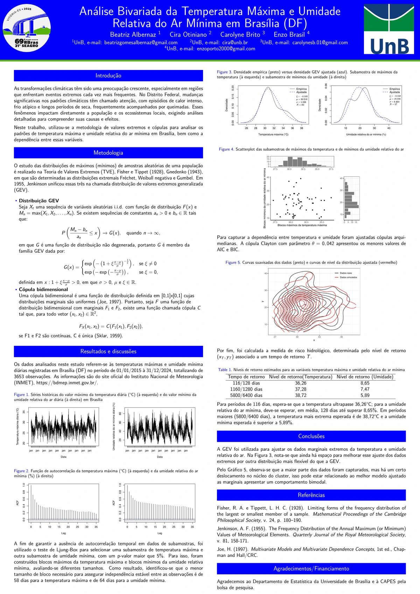

Why dependence matters
Many high-impact events are not adequately described by one variable at a time. Temperature and humidity, for example, can combine into regimes whose joint behaviour matters more than either marginal distribution alone. Copulas provide a way to model that dependence separately from the marginals while preserving probabilistic coherence.

Current work
One project estimates joint return levels for maximum temperature and minimum relative humidity by combining copulas with an extreme-value framework for bimodal data. A related collaboration studies conditional copula representations and extremal bounds for multivariate statistical functionals.
Connection to the broader programme
Dependence modelling is the bridge between several of my projects: compound climate extremes, joint solar–atmospheric behaviour, spatial covariance in the MSc thesis, and more general questions about how information is shared across variables, locations and physical processes.